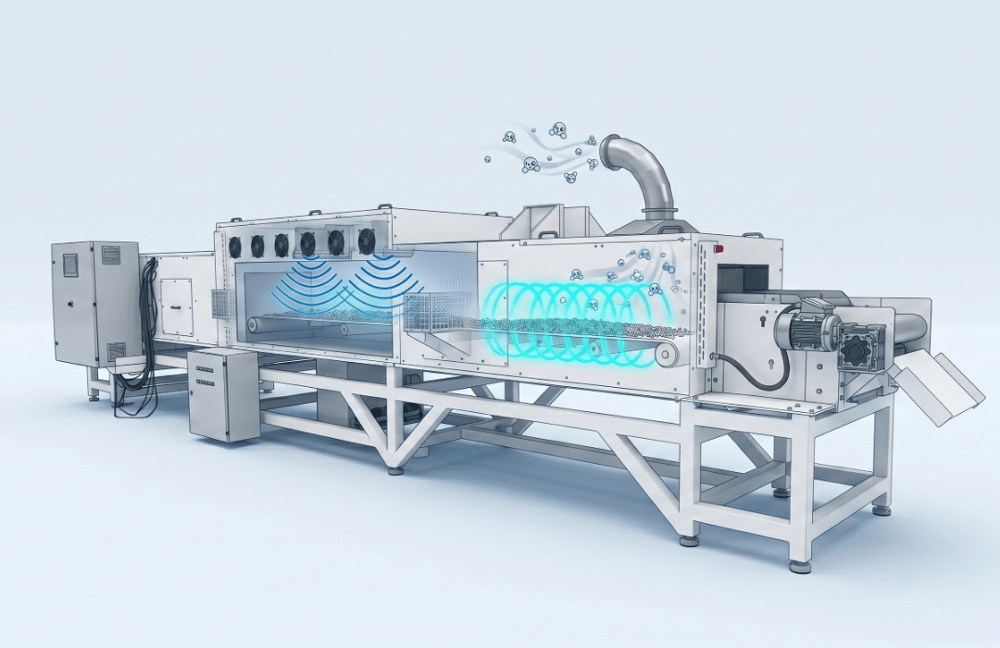

Artigos técnicos
Biblioteca de conteúdos da JODI
Use esta área para desenvolver artigos de blog, guias técnicos, comparativos e materiais educativos sobre secagem industrial por micro-ondas.
Tecnologia
Como funciona a secagem por micro-ondas industrial
Entenda o aquecimento volumétrico, a atuação sobre a umidade interna e os fatores que influenciam velocidade, qualidade e eficiência do processo.
Ler sobre a tecnologia ->

TecnologiaSecagem por micro-ondas industrial: princípios e aplicações
Um guia introdutório para entender onde a tecnologia pode gerar ganhos de tempo, controle e eficiência.
Ler conteúdo ->
ComparativoMicro-ondas + ar quente: quando um sistema híbrido faz sentido?
Veja como cada fonte de energia atua no processo e por que a configuração depende do produto.
Ver sistema híbrido ->
ProcessoComo identificar gargalos na etapa de secagem industrial
Ciclos longos, umidade variável e baixa repetibilidade podem limitar escala e margem produtiva.
Quero avaliar meu gargalo ->
EficiênciaCusto por kg de água removida: o que observar na análise
Critérios para comparar energia, tempo, perdas e produtividade real em diferentes tecnologias.
Entender meu custo de secagem ->
Em breveCurvas de secagem: como interpretar os dados do teste
Espaço preparado para novo artigo técnico da JODI.
Discutir curvas de secagem ->
Em breveChecklist para avaliar uma nova tecnologia de secagem
Espaço preparado para materiais educativos, guias ou posts de blog.
Escolher a melhor tecnologia ->